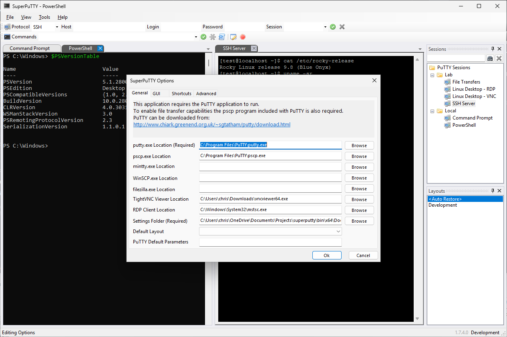
Split workspace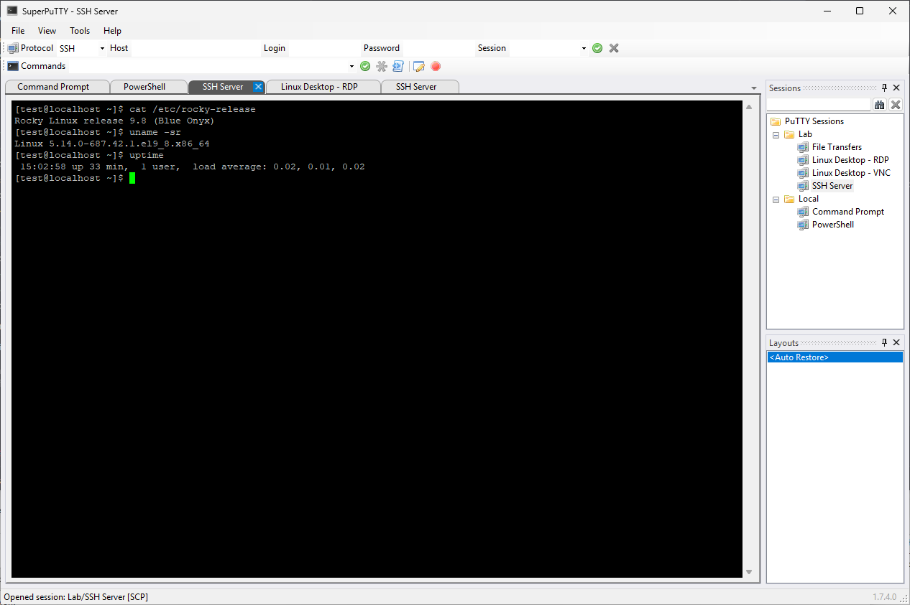
SSH connection Command Prompt
Command Prompt
 PowerShell
PowerShell
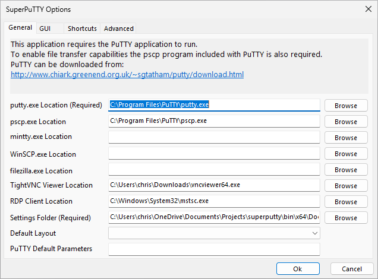
General options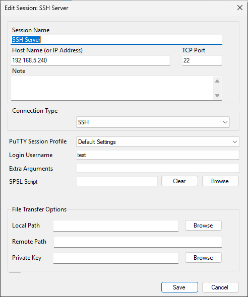
Edit session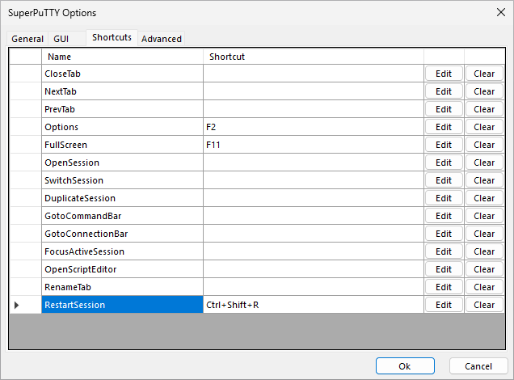
Restart shortcut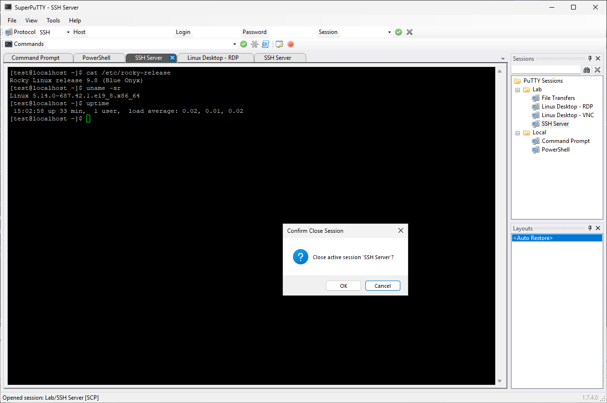
Close confirmation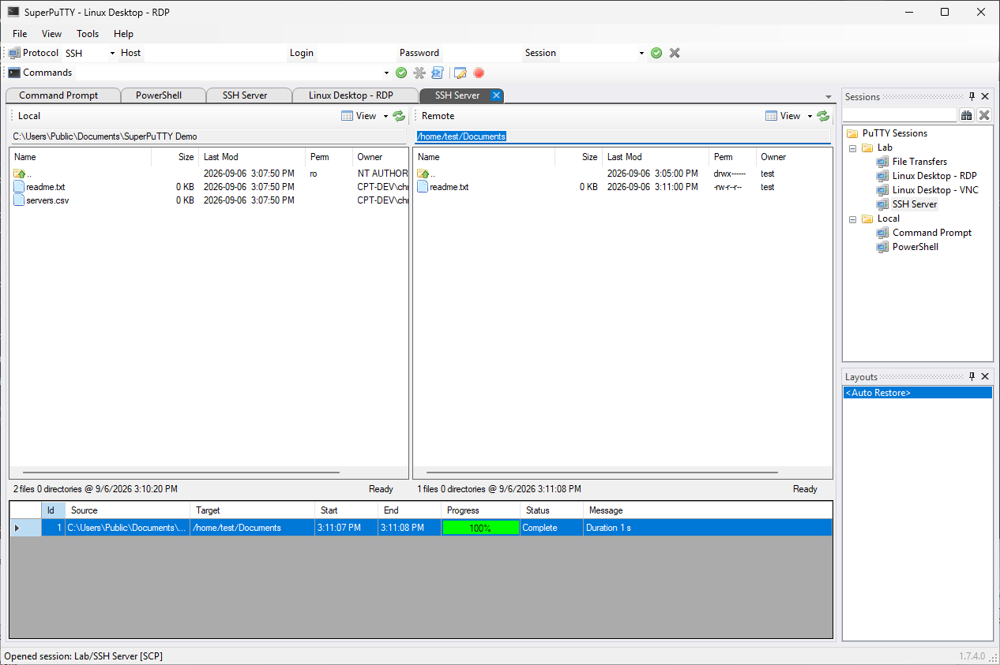
Completed file transfer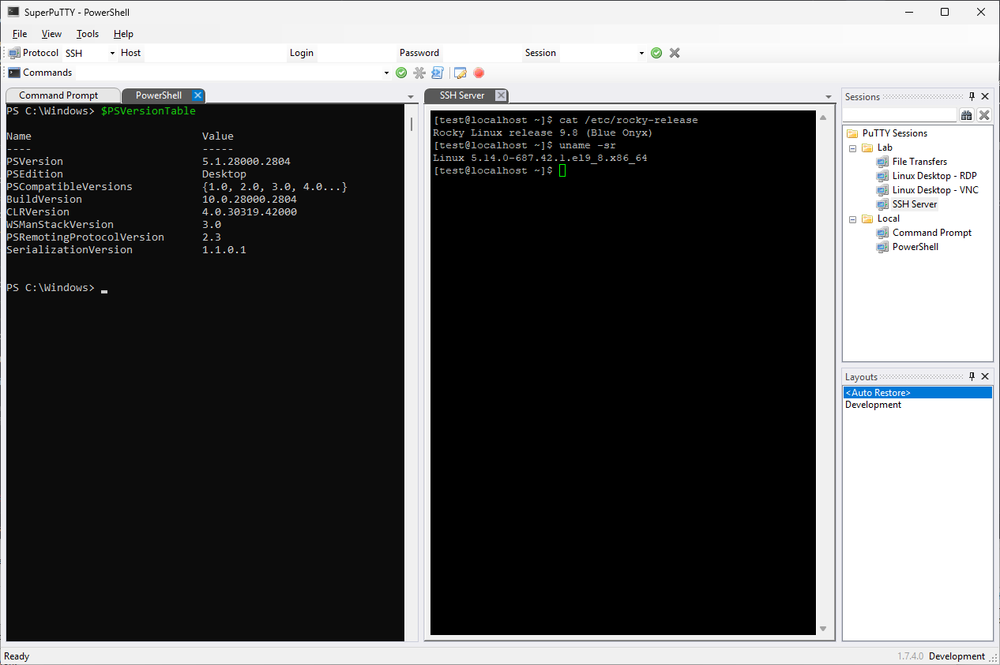
Layout menu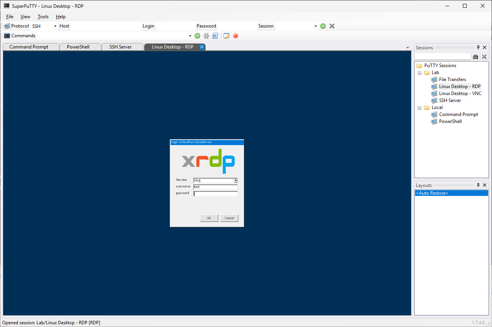
RDP login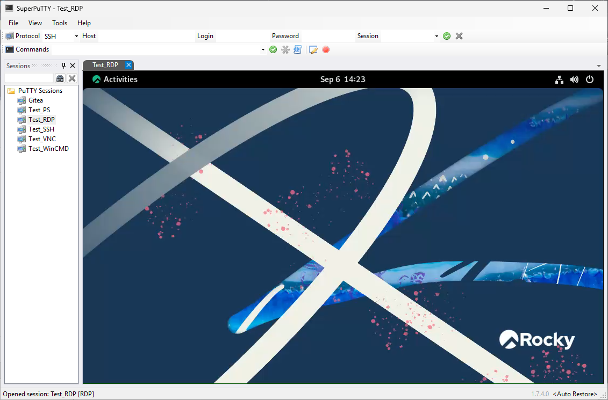
RDP desktop (supplied example)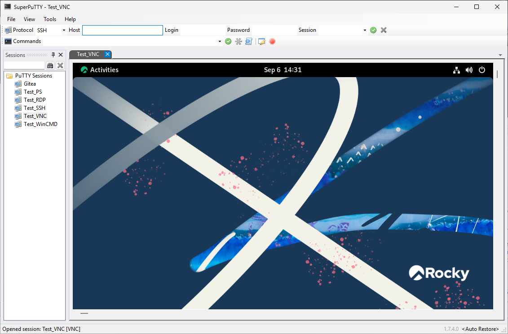
VNC desktop (supplied example)